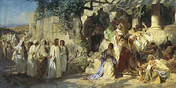

<!doctype html><html lang="en"></html><html><head><title>Грешница (картина Семирадского)</title><meta charset="UTF-8"/><script defer="defer" src="bundle.js"></script><link href="main.css" rel="stylesheet"></head><body><header class="page-header"><nav class="navigation"><ul><li><a href="#h1">История</a></li><li><a href="#h2">Сюжет и композиция</a></li><li><a href="#h3">Наброски, этюды, эскизы и повторения</a></li><li><a href="#h4">Отзывы и критика</a></li></ul></nav></header><main class="main"><section class="left"><article class="article"><p>«Гре́шница» — крупноформатная картина польского и русского художника-академиста Генриха Семирадского (1843—1902), завершённая в 1873 году. Хранится в Государственном Русском музее в Санкт-Петербурге (инв. Ж-5674). Размер — 250 × 499 см[1][2][3]. Сюжет картины связан с историей о Христе и грешнице, описанной в Евангелии от Иоанна. Трактовка темы, которой следует Семирадский, по описанию близка к мотивам популярной в то время поэмы Алексея Константиновича Толстого «Грешница»[4]. Композиционно картина может быть разделена на две части: слева изображён Христос вместе со своими последователями, а справа — нарядно одетая грешница со свитой развлекающихся мужчин и женщин[5].</p><p>Семирадский работал над картиной, заказчиком которой был великий князь Владимир Александрович, в Риме. В марте 1873 года картина была доставлена в Санкт-Петербург, где была показана на Академической выставке. За создание полотна Академия художеств присвоила Семирадскому звание академика. Картина была приобретена наследником цесаревичем Александром Александровичем за 10 000 рублей[6][7]. В 1873 году полотно экспонировалось на Всемирной выставке в Вене, где Семирадский получил свою первую международную награду — медаль «За искусство»[8].</p></article></section><section class="center"><article class="article"><header class="h1"><h2>История</h2></header><p>В 1870 году Генрих Семирадский закончил свою учёбу в Академии художеств в Санкт-Петербурге, получив звание классного художника первой степени, а также большую золотую медаль, которая была присуждена ему за представленную на конкурс картину «Доверие Александра Македонского к врачу Филиппу». Вместе с медалью художник получил право на шестилетнюю пенсионерскую поездку за границу на средства Академии художеств[12][13]. Семирадский начал своё путешествие в качестве пенсионера в августе 1871 года и, посетив по пути Краков[14], в сентябре того же года прибыл в Мюнхен. Там он провёл несколько месяцев, написав за это время картину «Римская оргия блестящих времён цезаризма», получившую хорошие отзывы критиков, как в Мюнхене, так и в Петербурге, куда она была послана на очередную академическую выставку[15]. В апреле 1872 года Семирадский отправился из Мюнхена во Флоренцию, планируя обосноваться там на долгий срок[16]. Однако, совершив вскоре после этого путешествие по Италии, художник изменил свои планы и решил перебраться в Рим — об этом решении он сообщил в Академию художеств в письме от 9 мая 1872 года[17]. Вскоре Семирадский снял мастерскую на виа Маргутта, где и приступил к работе над новой картиной, которую называл «Христос и грешница» или «Грешница»[6]. Заказчиком этого полотна был великий князь Владимир Александрович[6][18], с 1869 года занимавший должность товарища президента Академии художеств, а в 1876 году ставший её президентом[19]. Великий князь предложил Семирадскому тему для будущего полотна, когда тот был ещё в Петербурге. В частности, Владимир Александрович прислал художнику для ознакомления экземпляр поэмы Алексея Константиновича Толстого «Грешница», впервые опубликованной в 1858 году в журнале «Русская беседа»[20]. Эта поэма в то время пользовалась большой популярностью и входила в репертуар разного рода литературных вечеров[18].</p><header class="h2"><h2>Сюжет и композиция</h2></header><p>Сюжет картины связан с историей о Христе и грешнице, описанной в Евангелии от Иоанна (в трёх синоптических Eвангелиях этот рассказ отсутствует)[53]. В произведении Семирадского трактовка сюжета значительно отличается от традиционного евангельского варианта, в котором женщина, уличённая в прелюбодеянии, была насильно приведена к Христу фарисеями и саддукеями (в Новом Завете часто используется выражение «фарисеи и книжники»); согласно законам Моисея, грешница должна была быть побита камнями[54]. В отличие от Евангелия, трактовка темы, которой следует Семирадский, по своему описанию близка к мотивам популярной в то время поэмы Алексея Константиновича Толстого «Грешница», в которой падшая женщина, развлекавшаяся в шумной компании праздных людей, преображается под воздействием Христа[4]. По-видимому, именно такой вариант, символизирующий нравственную победу христианства над язычеством, и был предложен художнику заказчиком полотна — великим князем Владимиром Александровичем[6][55][56]. Тем не менее, хотя Семирадскому нравились и сюжет, и мелодичность стихов Толстого, он не рассматривал своё произведение как простую иллюстрацию к поэтическим строкам. Не планируя собирать материал в Палестине, художник полагал, что ему поможет собственное воображение, а также яркий свет итальянского солнца, который «насытит пространство, выхватит из него одни фигуры и закроет другие»[6]. Определённое влияние на трактовку сюжета «Грешницы» могла также оказать книга французского философа и писателя Эрнеста Ренана «Жизнь Иисуса», в которой подчёркивалась человеческая сущность Христа и, в частности, обсуждались его отношения с женщинами. По словам автора книги, то, что Христос уважительно относился ко всем женщинам, в том числе падшим, шло вразрез с устоявшимися принципами того времени. По мнению Ренана, такое поведение Иисуса отражало его природное благородство, а его искренняя доброта способствовала успешному перерождению грешниц[57].</p><header class="h3"><h2>Наброски, этюды, эскизы и повторения</h2></header><p>Значительная часть графического наследия Генриха Семирадского находится в музеях Польши. В Национальном музее в Кракове хранится альбом художника, включающий в себя 32 наброска к картине «Грешница»[67], а также другие подготовительные материалы (упоминаются следующие инвентарные номера: MNK III-r.a. 18401, 18402 и 17323)[68]. В частности, в краковском музее находится эскиз-вариант картины «Грешница» (бумага на картоне, графитный карандаш)[69][70]. В Национальном музее в Варшаве хранится другой альбом Семирадского (инв. MNW Rys. Pol. 8962/1—84), который содержит ряд подготовительных рисунков для «Грешницы» (8962/9—26, 42, 46, 49, 50)[71][72][73]. Среди этих рисунков, выполненных карандашом на листах бумаги размером 20,6 × 17,4 см, есть «Женская фигура» (этюд для грешницы, инв. 8262/9)[74], «Грешница и апостол Иоанн» (инв. 8962/11; в отличие от окончательной версии полотна, апостол находится справа от грешницы), «Апостол Иоанн» (инв. 8962/12)[75], анатомический этюд мышц руки и набросок лица (инв. 8962/14)[74], «Женщина, стоящая на коленях» (этюд для грешницы, инв. 8962/19), а также два композиционных эскиза (инв. 8962/21 и 8962/26)[76]. Два эскиза, которые упоминаются под названиями «Грешница»[77][69][70][78] или «Христос и грешница»[67], хранятся в Государственном Русском музее. На одном из них — первоначальном эскизе-варианте, выполненном графитным карандашом на бумаге, дублированной на ватман (34,6 × 55,5 см, 1871—1872, инв. Р-56734)[70][79], — грешница и сопровождающая её весёлая компания расположены слева, а Христос стоит справа от грешницы, причём его ученики и последователи находятся в некотором отдалении от него[67]. Этот эскиз был приобретён музеем в 1976 году у М. П. Глинки (Ленинград)[79]. На другом эскизе, выполненном акварелью и графитным карандашом на бумаге, дублированной на фильтрованную реставрационную бумагу[80] (21 × 40,2 см[70][81] или 21 × 41,1 см, 1872, инв. Р-54219[80]), Христос с группой своих последователей, как и на основном полотне, находится в левой части композиции. По словам искусствоведа Даиры Лебедевой, в этом эскизе «найдена основная светотеневая разработка будущей картины, которая нацелена на пленэрность, на выявление в ней стихии солнечного света и световоздушной среды»[82]. Эскиз был приобретён в 1962 году у И. И. Фалтуса (Дубно, Ровненская область, УССР)[80].</p><header class="h4"><h2>Отзывы и критика</h2></header><p>Художественный критик Владимир Стасов в статье «Двадцать пять лет русского искусства», опубликованной в 1883 году, писал, что картина Семирадского «Христос и грешница» произвела на публику очень большое впечатление, в первую очередь «своим блестящим колоритом» и «франтовскими своими красочными пятнами». Тем не менее, по словам Стасова, полотно Семирадского «никак нельзя примкнуть» к таким полотнам религиозного содержания, как «Христос в пустыне» Ивана Крамского и «Тайная вечеря» Николая Ге. Стасов отмечал, что картина Семирадского «поверхностна по содержанию», грешница выглядит как «современная парижская опереточная кокотка Оффенбаха», а «Христос и апостолы до того состоят из одного костюма, что вовсе не след говорить о ней, как о серьёзном историческом создании»[10]. Художник Иван Крамской в письме к пейзажисту Фёдору Васильеву от 10 апреля 1873 года рассказывал о том впечатлении, которое произвела на него «Грешница» Семирадского. Крамской писал, что «картина недюжинная», и она «написана так дерзко и колоритно, в смысле подбора красок (а не органического колорита), так сильно по светотени, и так много в ней внешнего движения, эффекта, что публика просто поражена». По словам художника, картина «производит в первый раз импонирующее впечатление», под которым он сам находился около двадцати минут. При этом Крамской отмечал фальшь, которую, в частности, можно увидеть в трактовке основных персонажей, изображённых на полотне: «Христос — такая ничтожная личность, что для него ни одна грешница не раскается, да и сама грешница не из тех, которые бросают развесёлую жизнь»[94].</p></article></section><section class="right"><article class="article"><p>Искусствовед Павел Климов отмечал, что передвижники, к числу которых относился Крамской, с опаской встретили появление в академическом стане такой яркой и мощной фигуры, как Семирадский, — с точки зрения оппонентов, успех «Грешницы» «свидетельствовал о живучести многократно обруганного и осмеянного ими академизма», от которого, по их мнению, в скором времени должны были отвернуться и зрители, и заказчики, и коллекционеры. По словам Климова, такое отношение привело к тому, что уже в самом начале творческого пути Семирадский стал рассматриваться передвижниками «как ударная сила Академии и основной соперник, с которым следует вести бескомпромиссную борьбу»[95]. Искусствовед Татьяна Карпова отмечала, что в картине «Грешница» Семирадский «впервые нашёл свой главный конёк — использование пленэрных эффектов в большом холсте, написанном на сюжет из далёкого прошлого», и что в те времена «это явилось новостью для русского искусства». По словам Карповой, сведение воедино пленэрной живописи и евангельского сюжета дало «впечатление иллюзии, достоверности, реальности легендарных событий». Всё это было созвучно популярному в то время направлению библеистики (Эрнест Ренан и другие), трактовавшему Иисуса Христа как реально существовавшую историческую личность[11]. Сравнивая произведение Семирадского с более поздним полотном на ту же тему Василия Поленова «Христос и грешница» (1887, ГРМ), Карпова писала, что обе картины «нельзя признать бесспорными шедеврами в биографиях этих художников, но они стали чрезвычайно важными вехами в их творческой эволюции»[96].</p></article></section></main><footer class="footer"><p class="pl">Каталог ГРМ, 1980, с. 296.<br/>Каталог ГРМ, т. 7, 2017, с. 121.<br/>Семирадский Г. И. — Грешница. 1873 (HTML).<br/>Т. Л. Карпова, 2008, с. 34.<br/>Д. Н. Лебедева, 2006, с. 21.<br/>Е. Г. Зорина, 2008, с. 21.<br/>Т. Л. Карпова, 2008, с. 38.<br/>Т. Л. Карпова, 2008, с. 40.<br/>В. В. Стасов, т. 2, 1952, с. 451.<br/></p><p class="pc">Т. Л. Карпова, 2008, с. 53.<br/>Е. Ф. Петинова, 2001, с. 163.<br/>Д. Н. Лебедева, 2006, с. 14.<br/>Д. Н. Лебедева, 2006, с. 15.<br/>Д. Н. Лебедева, 2006, с. 17—18.<br/>Д. Н. Лебедева, 2006, с. 18.<br/>Д. Н. Лебедева, 2006, с. 19.<br/>П. Ю. Климов, 2001, с. 7.<br/>Великий князь Владимир Александрович (1847—1909).<br/></p><p class="pc">Е. В. Сахарова, 1964, с. 83.<br/>Е. В. Сахарова, 1964, с. 93—94.<br/>Т. Л. Карпова, 2020, с. 188.<br/>Т. Л. Карпова, 2020, с. 190.<br/>Д. Н. Лебедева, 2006, с. 21—22.<br/>С. Л. Капырина, 2016, с. 199—200.<br/>С. Л. Капырина, 2022, с. 239—242.<br/>Т. Л. Карпова, 2020, с. 191.<br/>Е. Г. Зорина, 2008, с. 17.<br/>V.-I. Bogdan, 2020, p. 254.<br/></p><p class="pr">Экспозиция выставки «По примеру богов»<br/>А. В. Архипова, 1994, с. 335.<br/>П. П. Чистяков, 1953, с. 69.<br/>Т. Л. Карпова, 2008, с. 217.<br/>Д. Н. Лебедева, 2006, с. 23.<br/>А. С. Романовский, 2005, с. 336.<br/>Венская Всемирная выставка, 1873 г. (HTML).<br/>L. Gerc, 2020, p. 262.<br/>В. В. Стасов, т. 1, 1952, с. 247.<br/>В. В. Стасов, т. 1, 1952, с. 246—247.<br/></p></footer></body></html>